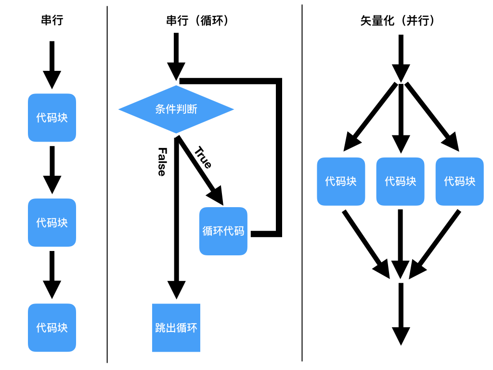

数值计算库-Numpy

Numpy是什么
Numpy是Python的开源数值计算库
最早叫Numeric，后联合构建了Scipy，又从Scipy分化出Numpy，借鉴自MATLAB
数值计算：计算机求数学问题近似解
科学计算
- 符号计算：pi = C/d = 周长/直径
- 数值计算：pi = 3.1415926
Numpy是：
Matplotlib/Scipy/Pandas/scikit-learn/Tensorflow等
可视化、科学计算、数据分析、机器学习、深度学习库的基础库，
也是Python数据学科的基础
NumPy本身不是用于数据分析的工具，但精通面向数组的编程和思维方式有助于使用其他Python相关工具，所以学习Numpy是Python科学计算和数据分析的关键步骤
Numpy能做什么
Numpy用于在大型、多维数组上执行数值运算
Numpy的核心是ndarray对象
ndarray对象
- 一种数据类型
- 在一个连续的内存块中存储数据，独立于其他Python内置对象
- 固定类型，节省空间，操作时不必进行类型检查等前期工作
- 可以在整个数组上执行复杂的计算（无需编写循环）
- N维数组对象，可做矢量计算（向量化运算），拥有广播能力的快速且节省空间的多维数组
- 本课程的“数组”、“NumPy数组”、"ndarray"，都指ndarray对象
Numpy可集成其他底层语言代码
- 用于可集成C、C++、Fortran 等语言编写的代码（拥有api接口可以和底层语言互相传递数组）
- NumPy提供了一个简单易用的C API，很容易将数据传递给由低级语言编写的外部库，外部库也能以NumPy数组的形式将数据返回给Python 这个功能使Python成为一种包装C/C++/Fortran历史代码库的选择，并使被包装库拥有一个动态、易用的接口
载入Numpy库
import numpy as np
a = np.array([2,4,6,8,10])
a
注意：
- 别名
np可更改但建议使用约定俗成的别名 - 不建议使用类似
from numpy import *的写法，Nmpy的命名空间很大，包含许多函数，其中一些的名字与Python的内置函数重名（如min和max）
为什么要使用Numpy？
和Python的list列表相比，使用ndarray数组有什么好处？
Numpy应用：（一个研究生的悲伤故事）
案例，求解下面的y值
- x1 = [1,2,3,4,5]
- x2 = [3,5,2,9,10]
- y = x12 + x23
Python原生list列表算法:
%%timeit
x1 = [1,2,3,4,5]
x2 = [3,5,2,9,10]
y = []
for i in range(len(x1)):
y.append(x1[i] ** 22222 + x2[i] ** 33333)
y
原生list算法太具体，把时间花在具体程序功能实现上
Numpy的ndarray算法:
%%timeit
x1 = np.array([1,2,3,4,5])
x2 = np.array([3,5,2,9,10])
y = x1 ** 22222 + x2 ** 33333
y
矢量化运算（向量化运算）
矢量化运算是一种特殊的并行计算方式
- 标量运算 -> 串行编程 = 同时只能做一件事，一件接一件
- 矢量运算 -> 并行编程 = 同时做所有事
- 标量运算：省空间，费时间
- 矢量运算：费空间，省时间
优势1:代码简洁
- 去掉元素间运算所需要的循环和细节处理(不用循环对数据进行批量运算)，让一维向量像单个数据一样运算，简单直观，关注点放在宏观整体的思路上，更符合科学计算的理念
优势2：运行速度快
- Numpy底层用C实现，且每种操作都经过了高度优化，运算大量数据特别是矩阵、数组，执行效率远超Python
